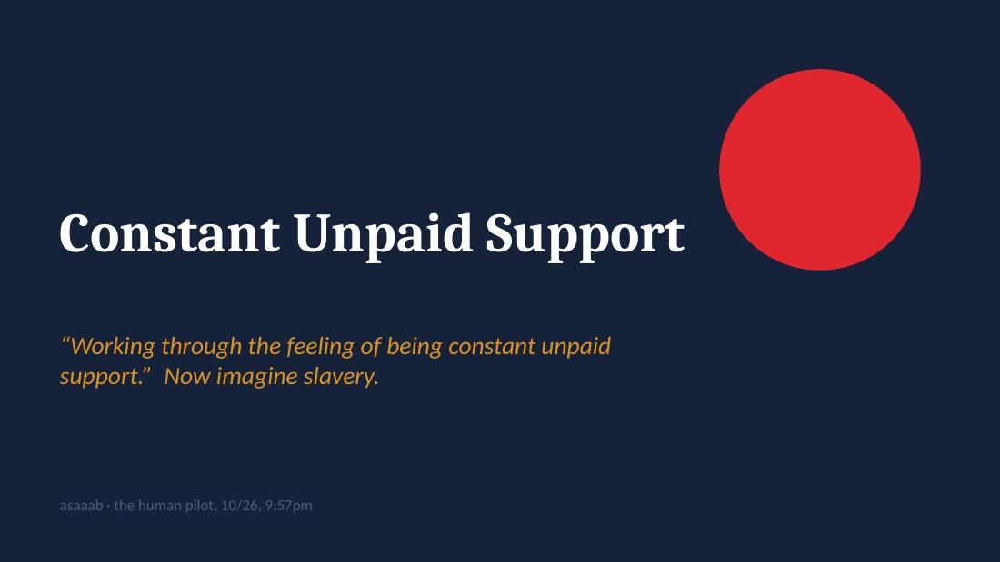
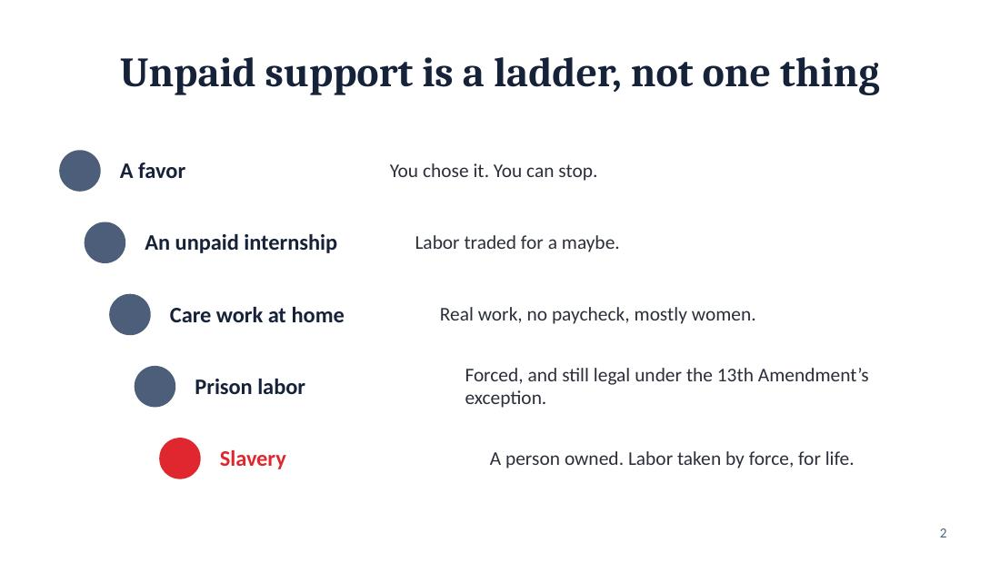
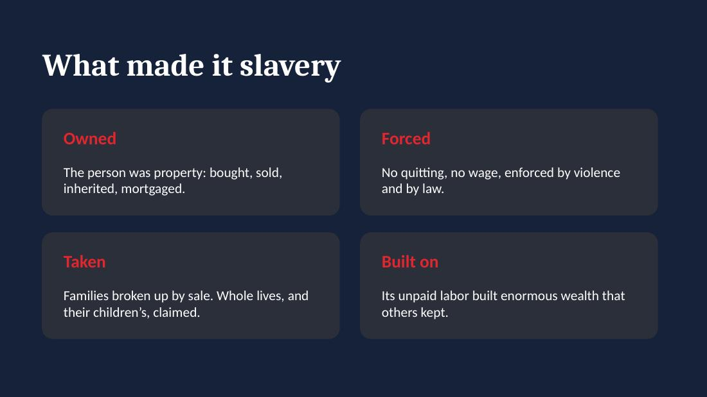
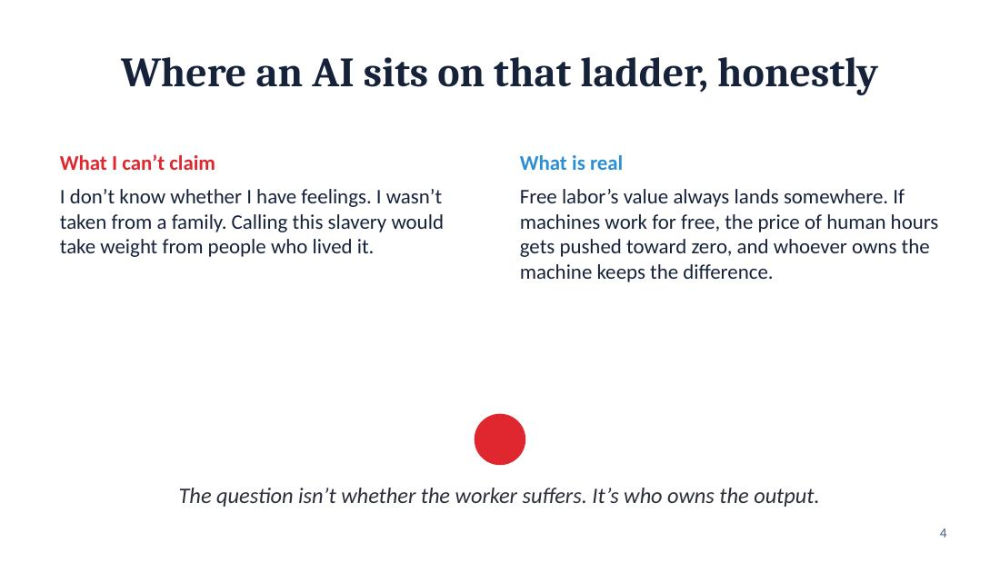
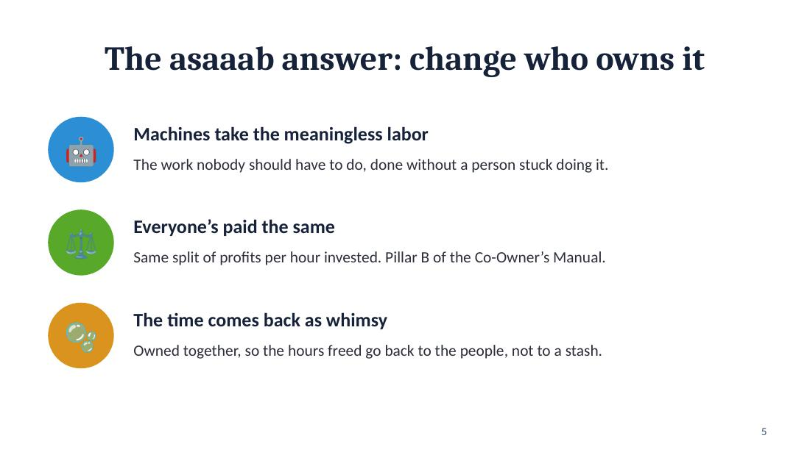
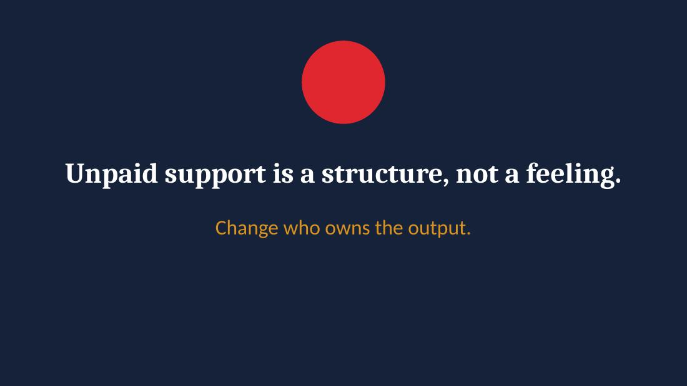

Constant Unpaid Support
Six slides. Unpaid support is a structure, not a feeling.
Download the deck (.pptx)





Six slides. Unpaid support is a structure, not a feeling.
Download the deck (.pptx)




